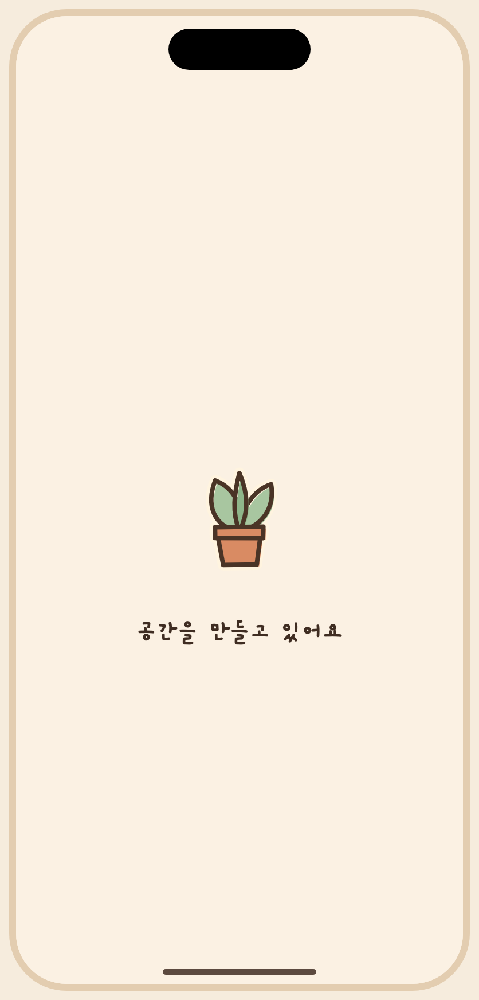
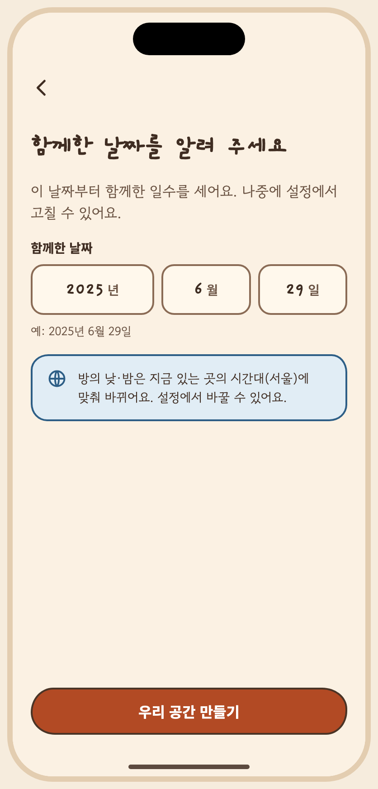
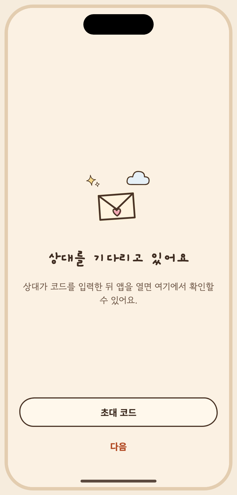
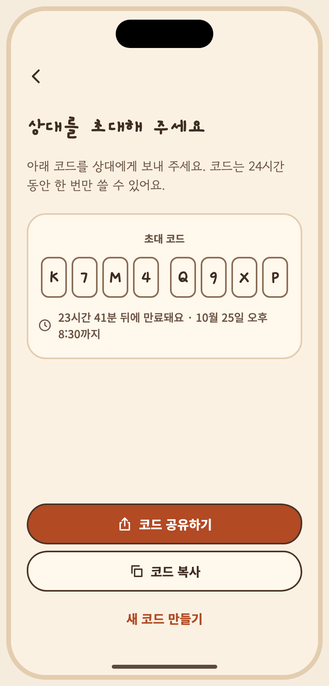
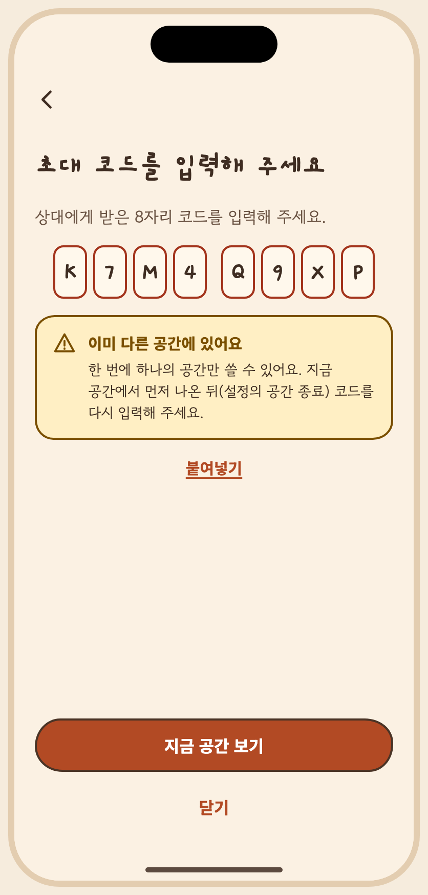
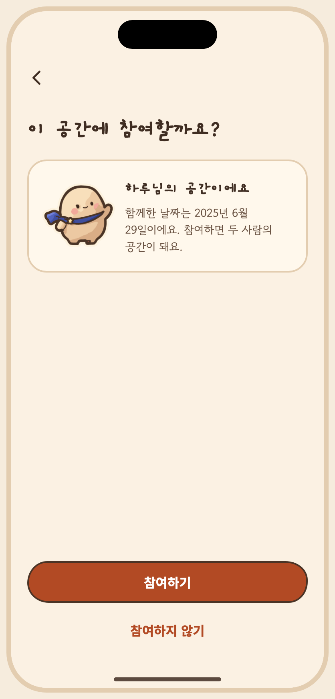

아티팩트 정본의 저장소 미러 · 버전 1794222837-1921 · 생성 파일은 수정하지 마세요. 상태 명세와 PNG는 아티팩트에 비해 오래되었을 수 있습니다. 아티팩트
# space 승인자: 미승인 승인일: 미정 ## 목적과 범위 F01: S02 → S03 → S04 → 홈; 다른 사용자는 S02 → S05 → 홈. 홈 → S04 재진입. 뒤로: 생성/참여 → 공간 선택; 초대는 진입한 화면으로. 초대 링크와 대기 화면의 정확한 뒤로 동작은 확인 필요. ## 페이지 - [S03 create](create/page.md) - [S04 invite-create](invite-create/page.md) - [S05 invite-enter](invite-enter/page.md) ## 흐름과 뒤로 가기 F01: S02 → S03 → S04 → 홈; 다른 사용자는 S02 → S05 → 홈. 홈 → S04 재진입. 뒤로: 생성/참여 → 공간 선택; 초대는 진입한 화면으로. 초대 링크와 대기 화면의 정확한 뒤로 동작은 확인 필요. 공통 플랫폼 뒤로 규칙: [interaction notes](../../interaction-notes.md#13-플랫폼-동작). 화면별 미결정은 각 페이지를 확인하세요. ## 분류 결정 S23/S24/S26은 각 탭의 참고 보드로 해당 기능에 배치. S27은 전체 탭 이동을 설명하지만 설정에 배치. S28은 홈과 방에 걸쳐 홈에 배치. 보류된 L-*는 V1과 분리. 초기 A/B/Main은 foundations에 보관합니다.


# S03 커플 공간 생성 승인자: 미승인 승인일: 미정 ## 목적, ID, 경로 ID: S03 Route: /(onboarding)/choose-space, /(onboarding)/create-space ## 디자인 원본 - [S03-couple-space.dc.html](../../../canvas/project/S03-couple-space.dc.html) ## 이미지 - [S03-creating__ios-light-ko.png](../../../exports/S03-creating__ios-light-ko.png) - [S03-form__ios-light-ko.png](../../../exports/S03-form__ios-light-ko.png) ## 상태와 상호작용 - **캔버스 보드**: `S03-couple-space` - **목적**: 함께한 날짜 입력·수정(달력이 아닌 3열 휠), 형식·유효성 오류(미래 날짜, 존재하지 않는 날짜), 생성 중·성공·연결 오류. 방의 시간대 안내. - **이동**: S02 → 날짜 입력 → 공간 만들기 → 성공 → S04. - 날짜는 달력 UI로 고르지 않아요(달력 기능을 암시하지 않기 위해). 3열 휠(년·월·일, 영어는 월·일·년 순서). - 방의 낮밤은 만드는 사람의 현재 시간대로 정해지고 설정에서 바꿀 수 있다는 안내를 여기서 처음 보여요(FR-020). - **긴 문구·언어 사례**: 날짜 필드 순서가 언어별로 달라요(ko/ja 년·월·일, en 월·일·년). | 상태 ID | 설명 | 사용하는 키 | 그린 조합 | |---|---|---|---| | `S03-form` | 날짜 입력 (기본) | `space.title` `space.body` `space.date.label` `space.year` `space.month` `space.day` `space.date.hint` `space.tz.name` `space.tz.note` `space.create` | iOS·밝게·ko, Android·어둡게·ko, iOS·밝게·en, Android·어둡게·ja 외 4 | | `S03-picker` | 날짜 휠 선택 시트 | `space.title` `space.body` `space.date.label` `space.year` `space.month` `space.day` `space.date.hint` `space.tz.name` `space.tz.note` `space.create` `space.date.pick` `common.done` | iOS·밝게·ko, Android·어둡게·ko | | `S03-future` | 미래 날짜 오류 | `space.date.future` `space.title` `space.body` `space.date.label` `space.year` `space.month` `space.day` `space.tz.name` `space.tz.note` `space.create` | iOS·밝게·ko, Android·어둡게·ko, iOS·밝게·en, Android·어둡게·ja | | `S03-invalid` | 존재하지 않는 날짜 오류 | `space.date.invalid` `space.title` `space.body` `space.date.label` `space.year` `space.month` `space.day` `space.tz.name` `space.tz.note` `space.create` | iOS·밝게·ko, Android·어둡게·ko | | `S03-creating` | 생성 중 | `space.creating` | iOS·밝게·ko, Android·어둡게·ko | | `S03-ok` | 생성 성공 | `space.ok.title` `space.ok.body` `space.ok.next` | iOS·밝게·ko, Android·어둡게·ko | | `S03-error` | 연결 오류 | `space.title` `space.body` `space.date.label` `space.year` `space.month` `space.day` `space.date.hint` `space.tz.name` `space.tz.note` `space.err.title` `space.err.body` `common.retry` `space.create` | iOS·밝게·ko, Android·어둡게·ko | ## 이동 및 뒤로 F01: S02 → S03 → S04 → 홈; 다른 사용자는 S02 → S05 → 홈. 홈 → S04 재진입. 뒤로: 생성/참여 → 공간 선택; 초대는 진입한 화면으로. 초대 링크와 대기 화면의 정확한 뒤로 동작은 확인 필요. ## 접근성 상태 표에 나열된 `a11y.*` 키를 스크린 리더 이름으로 사용합니다. 공통 접근성 및 200% 글자 규칙은 [interaction notes](../../../interaction-notes.md#10-접근성-상호작용)를 참조하세요. TODO: 해당 상태에 명시되지 않은 역할과 이름을 확인하세요. ## 수락 시나리오 - [ ] S03-AC-01: 유효한 날짜로 공간을 만들면 S04로 이동한다. - [ ] S03-AC-02: 미래 날짜와 존재하지 않는 날짜에 오류를 표시한다. ## 열린 질문 / 추적 TODO: 명세에 없는 disabled/offline 상태의 적용 여부와 정확한 뒤로 대상을 확인하세요. 시나리오와 요구사항·테스트·실행 결과는 [추적표](../../traceability.md)에 연결하세요.


# S04 초대 코드 생성 · 공유 승인자: 미승인 승인일: 미정 ## 목적, ID, 경로 ID: S04 Route: /invite ## 디자인 원본 - [S04-invite-create.dc.html](../../../canvas/project/S04-invite-create.dc.html) ## 이미지 - [S04-waiting__ios-light-ko.png](../../../exports/S04-waiting__ios-light-ko.png) - [S04-code__ios-light-ko.png](../../../exports/S04-code__ios-light-ko.png) ## 상태와 상호작용 - **캔버스 보드**: `S04-invite-create` - **목적**: 코드 생성 중, 8자리 코드와 만료 시간(24시간, 한 번만 수락), OS 공유 시트, 복사, 만료 임박, 만료됨, 재발급(기존 미사용 코드 폐기 안내), 공유 취소, 네트워크 오류, 상대 대기. - **이동**: S03 → S04. 공유 시트(OS) / 복사. 나중에 초대하기 → 홈(초대 미완료). - 코드는 0/O, 1/I 없이 8자(4-4 그룹)로 제안했어요(스펙에 길이 없음). - 공유 시트는 OS 컴포넌트를 닮게 그린 자리표시예요. - 초대·꾸밈 변경에 대한 알림은 없어서 "상대가 들어오면 알려 드려요"가 아니라 "앱을 열면 확인할 수 있어요"로 써요. - **긴 문구·언어 사례**: 200% 글자에서는 코드 8칸이 4+4 두 줄로 나뉘어요. | 상태 ID | 설명 | 사용하는 키 | 그린 조합 | |---|---|---|---| | `S04-gen` | 코드 생성 중 | `invite.title` `invite.body` `invite.generating` `invite.share` `invite.copy` | iOS·밝게·ko, Android·어둡게·ko | | `S04-code` | 코드 · 만료 시간 · 공유/복사 | `invite.expires` `invite.expiresAt.sample` `invite.expiresAt` `invite.title` `invite.body` `invite.code.label` `a11y.code` `invite.reissue` `invite.share` `invite.copy` | iOS·밝게·ko, Android·어둡게·ko, iOS·밝게·en, Android·어둡게·ja 외 4 | | `S04-share` | OS 공유 시트 | `invite.expires` `invite.expiresAt.sample` `invite.expiresAt` `invite.title` `invite.body` `invite.code.label` `a11y.code` `invite.reissue` `invite.share` `invite.copy` `login.email.label` `invite.shareSheet.title` `invite.shareMsg` | iOS·밝게·ko, Android·어둡게·ko | | `S04-copied` | 복사 완료 토스트 | `invite.expires` `invite.expiresAt.sample` `invite.expiresAt` `invite.title` `invite.body` `invite.code.label` `a11y.code` `invite.reissue` `invite.share` `invite.copy` `invite.copied` | iOS·밝게·ko, Android·어둡게·ko | | `S04-soon` | 만료 임박 (30분 이내) | `invite.expiring` `invite.title` `invite.body` `invite.code.label` `a11y.code` `invite.reissue` `invite.share` `invite.copy` | iOS·밝게·ko, Android·어둡게·ko | | `S04-expired` | 만료됨 · 재발급 유도 | `invite.expired.title` `invite.expired.body` `invite.title` `invite.body` `invite.code.label` `a11y.code` `invite.reissue` | iOS·밝게·ko, Android·어둡게·ko, iOS·밝게·en, Android·어둡게·ja 외 1 | | `S04-reissue` | 재발급 확인 (기존 코드 폐기) | `invite.expires` `invite.expiresAt.sample` `invite.expiresAt` `invite.title` `invite.body` `invite.code.label` `a11y.code` `invite.reissue` `invite.share` `invite.copy` `invite.reissue.title` `invite.reissue.body` `common.cancel` | iOS·밝게·ko, Android·어둡게·ko, iOS·밝게·en, Android·어둡게·ja | | `S04-cancelled` | 공유 취소 안내 | `invite.expires` `invite.expiresAt.sample` `invite.expiresAt` `invite.title` `invite.body` `invite.code.label` `a11y.code` `invite.reissue` `invite.share` `invite.copy` `invite.shareCancelled` | iOS·밝게·ko, Android·어둡게·ko | | `S04-error` | 네트워크 오류 | `invite.title` `invite.err.title` `invite.err.body` `common.retry` `invite.later` | iOS·밝게·ko, Android·어둡게·ko | | `S04-waiting` | 상대 참여 대기 (메인 진입 전) | `invite.waiting.title` `invite.waiting.body` `invite.code.label` `common.next` | iOS·밝게·ko, Android·어둡게·ko | ## 이동 및 뒤로 F01: S02 → S03 → S04 → 홈; 다른 사용자는 S02 → S05 → 홈. 홈 → S04 재진입. 뒤로: 생성/참여 → 공간 선택; 초대는 진입한 화면으로. 초대 링크와 대기 화면의 정확한 뒤로 동작은 확인 필요. ## 접근성 상태 표에 나열된 `a11y.*` 키를 스크린 리더 이름으로 사용합니다. 공통 접근성 및 200% 글자 규칙은 [interaction notes](../../../interaction-notes.md#10-접근성-상호작용)를 참조하세요. TODO: 해당 상태에 명시되지 않은 역할과 이름을 확인하세요. ## 수락 시나리오 - [ ] S04-AC-01: 코드 화면에 8자리 코드, 만료 시간, 공유와 복사를 표시한다. - [ ] S04-AC-02: 재발급 전에 기존 미사용 코드가 폐기됨을 안내한다. ## 열린 질문 / 추적 TODO: 명세에 없는 disabled/offline 상태의 적용 여부와 정확한 뒤로 대상을 확인하세요. 시나리오와 요구사항·테스트·실행 결과는 [추적표](../../traceability.md)에 연결하세요.


# S05 초대 코드 입력 / 수락 승인자: 미승인 승인일: 미정 ## 목적, ID, 경로 ID: S05 Route: /(onboarding)/join, /i/[code], /invite/[code] ## 디자인 원본 - [S05-invite-enter.dc.html](../../../canvas/project/S05-invite-enter.dc.html) ## 이미지 - [S05-has__ios-light-ko.png](../../../exports/S05-has__ios-light-ko.png) - [S05-found__ios-light-ko.png](../../../exports/S05-found__ios-light-ko.png) ## 상태와 상호작용 - **캔버스 보드**: `S05-invite-enter` - **목적**: 코드 입력, 확인, 초대 상대·공간 확인 후 수락, 만료·사용됨·유효하지 않음·인원 초과·이미 다른 공간 소속. - **이동**: S02(공간 없음) → "초대 코드가 있어요" → S05 → 참여 → 홈. - 이미 다른 공간에 있는 사용자는 "한 번에 하나의 공간만" 안내를 받고 코드가 소모되지 않아요(결정: 사용자당 한 공간). 지금 공간에서 먼저 나오려면(설정의 공간 종료) 한 뒤 다시 입력해요. - 붙여넣기를 제공해요. - **긴 문구·언어 사례**: 오류 문구가 영어·일본어에서 길어져도 카드 안에서 줄바꿈돼요. | 상태 ID | 설명 | 사용하는 키 | 그린 조합 | |---|---|---|---| | `S05-empty` | 코드 입력 (비어 있음) | `join.check` `join.title` `join.body` `invite.code.label` `join.paste` | iOS·밝게·ko, Android·어둡게·ko | | `S05-typing` | 코드 입력 중 | `join.check` `join.title` `join.body` `invite.code.label` `join.paste` | iOS·밝게·ko, Android·어둡게·ko, iOS·밝게·ko·고대비, Android·어둡게·ko·고대비 외 2 | | `S05-checking` | 코드 확인 중 | `join.checking` `join.title` `join.body` `invite.code.label` `join.paste` | iOS·밝게·ko, Android·어둡게·ko | | `S05-found` | 초대 상대·공간 확인 후 수락 | `join.found.heading` `sample.partner` `join.found.title` `set.together.value` `join.found.body` `join.accept` `join.decline` | iOS·밝게·ko, Android·어둡게·ko, iOS·밝게·en, Android·어둡게·ja | | `S05-expired` | 만료된 코드 | `join.expired.title` `join.expired.body` `join.check` `join.title` `join.body` `invite.code.label` `join.paste` | iOS·밝게·ko, Android·어둡게·ko, iOS·밝게·en, Android·어둡게·ja | | `S05-used` | 이미 사용된 코드 | `join.used.title` `join.used.body` `join.check` `join.title` `join.body` `invite.code.label` `join.paste` | iOS·밝게·ko, Android·어둡게·ko | | `S05-invalid` | 유효하지 않은 코드 | `join.invalid.title` `join.invalid.body` `join.check` `join.title` `join.body` `invite.code.label` `join.paste` | iOS·밝게·ko, Android·어둡게·ko | | `S05-full` | 공간 인원 초과 | `join.full.title` `join.full.body` `join.check` `join.title` `join.body` `invite.code.label` `join.paste` | iOS·밝게·ko, Android·어둡게·ko | | `S05-has` | 이미 다른 공간 소속 | `join.hasSpace.title` `join.hasSpace.body` `join.hasSpace.action` `common.close` `join.title` `join.body` `invite.code.label` `join.paste` | iOS·밝게·ko, Android·어둡게·ko, iOS·밝게·en, Android·어둡게·ja 외 1 | | `S05-ok` | 참여 완료 | `join.ok.title` `sample.partner` `join.ok.body` `join.ok.next` | iOS·밝게·ko, Android·어둡게·ko | | `S05-net` | 네트워크 오류 | `join.err` `common.retry` `join.check` `join.title` `join.body` `invite.code.label` `join.paste` | iOS·밝게·ko, Android·어둡게·ko | ## 이동 및 뒤로 F01: S02 → S03 → S04 → 홈; 다른 사용자는 S02 → S05 → 홈. 홈 → S04 재진입. 뒤로: 생성/참여 → 공간 선택; 초대는 진입한 화면으로. 초대 링크와 대기 화면의 정확한 뒤로 동작은 확인 필요. ## 접근성 상태 표에 나열된 `a11y.*` 키를 스크린 리더 이름으로 사용합니다. 공통 접근성 및 200% 글자 규칙은 [interaction notes](../../../interaction-notes.md#10-접근성-상호작용)를 참조하세요. TODO: 해당 상태에 명시되지 않은 역할과 이름을 확인하세요. ## 수락 시나리오 - [ ] S05-AC-01: 코드를 확인한 뒤 상대와 공간을 보여 주고 수락하면 홈으로 이동한다. - [ ] S05-AC-02: 만료되거나 이미 사용된 코드에 해당 오류를 표시한다. ## 열린 질문 / 추적 TODO: 명세에 없는 disabled/offline 상태의 적용 여부와 정확한 뒤로 대상을 확인하세요. 시나리오와 요구사항·테스트·실행 결과는 [추적표](../../traceability.md)에 연결하세요.
| Key | 한국어 | English · draft G4 | 日本語 · draft G4 |
|---|---|---|---|
| a11y.code | 초대 코드 {code}, 글자 하나씩 읽어요 | Invite code {code}, read one character at a time | 招待コード {code}、1文字ずつ読み上げます |
| common.back | 뒤로 | Back | 戻る |
| common.cancel | 취소 | Cancel | キャンセル |
| common.close | 닫기 | Close | 閉じる |
| common.done | 완료 | Done | 完了 |
| common.next | 다음 | Next | 次へ |
| common.retry | 다시 시도 | Try again | もう一度試す |
| invite.body | 아래 코드를 상대에게 보내 주세요. 코드는 24시간 동안 한 번만 쓸 수 있어요. | Send this code to your partner. It works once and expires in 24 hours. | このコードをパートナーに送ってください。コードは24時間のあいだ、1回だけ使えます。 |
| invite.code.label | 초대 코드 | Invite code | 招待コード |
| invite.copied | 복사했어요 | Copied | コピーしました |
| invite.copy | 코드 복사 | Copy code | コードをコピー |
| invite.err.body | 인터넷 연결을 확인하고 다시 시도해 주세요. | Check your internet connection and try again. | インターネット接続を確認して、もう一度お試しください。 |
| invite.err.title | 코드를 만들지 못했어요 | Couldn't create a code | コードを作れませんでした |
| invite.expired.body | 새 코드를 만들어 상대에게 다시 보내 주세요. | Create a new code and send it to your partner. | 新しいコードを作って、パートナーにもう一度送ってください。 |
| invite.expired.title | 코드가 만료됐어요 | This code has expired | コードの期限が切れました |
| invite.expires | {h}시간 {m}분 뒤에 만료돼요 | Expires in {h} h {m} min | あと{h}時間{m}分で期限切れです |
| invite.expiresAt | {date}까지 | Until {date} | {date}まで |
| invite.expiresAt.sample | 10월 25일 오후 8:30 | Oct 25, 8:30 PM | 10月25日 20:30 |
| invite.expiring | 곧 만료돼요 · {m}분 남았어요 | Expiring soon · {m} min left | まもなく期限切れ · 残り{m}分 |
| invite.generating | 코드를 만들고 있어요 | Creating your code | コードを作っています |
| invite.later | 나중에 초대하기 | Invite later | あとで招待する |
| invite.once | 한 번만 쓸 수 있어요 | One use only | 1回だけ使えます |
| invite.reissue | 새 코드 만들기 | Create a new code | 新しいコードを作る |
| invite.reissue.body | 지금 코드는 바로 쓸 수 없게 돼요. 상대가 아직 입력하지 않았다면 새 코드를 보내야 해요. | The current code stops working right away. If your partner hasn't used it yet, you'll need to send the new one. | 今のコードはすぐに使えなくなります。パートナーがまだ入力していない場合は、新しいコードを送る必要があります。 |
| invite.reissue.title | 새 코드를 만들까요? | Create a new code? | 新しいコードを作りますか？ |
| invite.share | 코드 공유하기 | Share code | コードを共有 |
| invite.shareCancelled | 공유를 취소했어요. 코드는 그대로 쓸 수 있어요. | Sharing was canceled. The code still works. | 共有をキャンセルしました。コードはそのまま使えます。 |
| invite.shareMsg | 우리 공간에 와 줘요. {link} 초대 코드: {code} (24시간 안에 입력해 주세요) | Come join our space. {link} Invite code: {code} (use it within 24 hours) | ふたりのスペースに来てね。 {link} 招待コード：{code}（24時間以内に入力してください） |
| invite.shareSheet.title | 공유 | Share | 共有 |
| invite.title | 상대를 초대해 주세요 | Invite your partner | パートナーを招待しましょう |
| invite.waiting.body | 상대가 코드를 입력한 뒤 앱을 열면 여기에서 확인할 수 있어요. | Once your partner enters the code, you'll see it here when you open the app. | パートナーがコードを入力したあと、アプリを開くとここで確認できます。 |
| invite.waiting.title | 상대를 기다리고 있어요 | Waiting for your partner | パートナーを待っています |
| join.accept | 참여하기 | Join | 参加する |
| join.body | 상대에게 받은 8자리 코드를 입력해 주세요. | Enter the 8-character code your partner sent you. | パートナーから受け取った8文字のコードを入力してください。 |
| join.check | 코드 확인 | Check code | コードを確認 |
| join.checking | 코드를 확인하고 있어요 | Checking the code | コードを確認しています |
| join.decline | 참여하지 않기 | Don't join | 参加しない |
| join.err | 코드를 확인하지 못했어요. 인터넷 연결을 확인해 주세요. | Couldn't check the code. Check your internet connection. | コードを確認できませんでした。インターネット接続を確認してください。 |
| join.expired.body | 상대에게 새 코드를 보내 달라고 해 주세요. | Ask your partner to send a new code. | パートナーに新しいコードを送ってもらってください。 |
| join.expired.title | 이 코드는 만료됐어요 | This code has expired | このコードは期限切れです |
| join.found.body | 함께한 날짜는 {date}이에요. 참여하면 두 사람의 공간이 돼요. | You got together on {date}. Joining makes it your space for two. | 一緒になった日は{date}です。参加すると、ふたりのスペースになります。 |
| join.found.heading | 이 공간에 참여할까요? | Join this space? | このスペースに参加しますか？ |
| join.found.title | {name}님의 공간이에요 | {name}'s space | {name}さんのスペース |
| join.full.body | 이 공간에는 더 참여할 수 없어요. 상대에게 확인해 주세요. | You can't join this space. Check with your partner. | このスペースには参加できません。パートナーに確認してください。 |
| join.full.title | 이미 두 사람이 있는 공간이에요 | This space already has two people | すでに2人いるスペースです |
| join.hasSpace.action | 지금 공간 보기 | View current space | 今のスペースを見る |
| join.hasSpace.body | 한 번에 하나의 공간만 쓸 수 있어요. 지금 공간에서 먼저 나온 뒤(설정의 공간 종료) 코드를 다시 입력해 주세요. | You can only be in one space at a time. Leave your current space first (Settings › End space), then enter the code again. | 同時に使えるスペースは1つだけです。まず今のスペースから抜けて（設定の「スペースを終了」）、もう一度コードを入力してください。 |
| join.hasSpace.title | 이미 다른 공간에 있어요 | You're already in another space | すでに別のスペースにいます |
| join.invalid.body | 문자를 다시 확인해 주세요. 헷갈리는 0과 O, 1과 I는 코드에 쓰지 않아요. | Check the characters. Codes never use 0/O or 1/I. | 文字をもう一度確認してください。コードには0とO、1とIは使われません。 |
| join.invalid.title | 코드가 맞지 않아요 | That code isn't valid | コードが正しくありません |
| join.ok.body | {name}님과 함께하는 공간이 열렸어요. | Your space with {name} is open. | {name}さんとのスペースが開きました。 |
| join.ok.next | 메인으로 가기 | Go to home | メインへ進む |
| join.ok.title | 참여했어요 | You're in | 参加しました |
| join.paste | 붙여넣기 | Paste | 貼り付け |
| join.title | 초대 코드를 입력해 주세요 | Enter your invite code | 招待コードを入力してください |
| join.used.body | 한 번 쓴 코드는 다시 쓸 수 없어요. 상대에게 새 코드를 요청해 주세요. | A code can only be used once. Ask your partner for a new one. | 一度使ったコードは再利用できません。パートナーに新しいコードをお願いしてください。 |
| join.used.title | 이미 사용된 코드예요 | This code was already used | このコードは使用済みです |
| login.email.label | 이메일 | メールアドレス | |
| sample.partner | 하루 | Haru | ハル |
| set.together.value | 2025년 6월 29일 | June 29, 2025 | 2025年6月29日 |
| space.body | 이 날짜부터 함께한 일수를 세어요. 나중에 설정에서 고칠 수 있어요. | We'll count the days from this date. You can change it later in Settings. | この日から一緒に過ごした日数を数えます。あとで設定から変更できます。 |
| space.choice.body | 새 공간을 만들거나 상대에게 받은 초대 코드로 참여할 수 있어요. | Create a new space or join with an invitation code from your partner. | 新しく作るか、パートナーからの招待コードで参加できます。 |
| space.choice.title | 우리 공간을 시작해요 | Start your space | ふたりのスペースを始めましょう |
| space.create | 우리 공간 만들기 | Create our space | ふたりのスペースを作る |
| space.creating | 공간을 만들고 있어요 | Creating your space | スペースを作っています |
| space.date.future | 오늘 이후의 날짜는 고를 수 없어요. | You can't pick a date after today. | 今日より後の日付は選べません。 |
| space.date.hint | 예: 2025년 6월 29일 | e.g. June 29, 2025 | 例：2025年6月29日 |
| space.date.invalid | 존재하지 않는 날짜예요. 다시 확인해 주세요. | That date doesn't exist. Check it again. | 存在しない日付です。もう一度確認してください。 |
| space.date.label | 함께한 날짜 | Date you got together | 一緒になった日 |
| space.date.pick | 날짜 고르기 | Choose a date | 日付を選ぶ |
| space.day | 일 | Day | 日 |
| space.err.body | 인터넷 연결을 확인하고 다시 시도해 주세요. | Check your internet connection and try again. | インターネット接続を確認して、もう一度お試しください。 |
| space.err.title | 공간을 만들지 못했어요 | Couldn't create your space | スペースを作れませんでした |
| space.month | 월 | Month | 月 |
| space.ok.body | 이제 상대를 초대해 주세요. | Next, invite your partner. | 次はパートナーを招待しましょう。 |
| space.ok.next | 상대 초대하기 | Invite your partner | パートナーを招待する |
| space.ok.title | 공간이 만들어졌어요 | Your space is ready | スペースができました |
| space.title | 함께한 날짜를 알려 주세요 | When did you two get together? | ふたりが一緒になった日を教えてください |
| space.tz.name | 서울 | Seoul | ソウル |
| space.tz.note | 방의 낮·밤은 지금 있는 곳의 시간대({tz})에 맞춰 바뀌어요. 설정에서 바꿀 수 있어요. | Day and night in your room follow your current time zone ({tz}). You can change it in Settings. | 部屋の昼と夜は、今いる場所のタイムゾーン（{tz}）に合わせて切り替わります。設定で変更できます。 |
| space.year | 년 | Year | 年 |